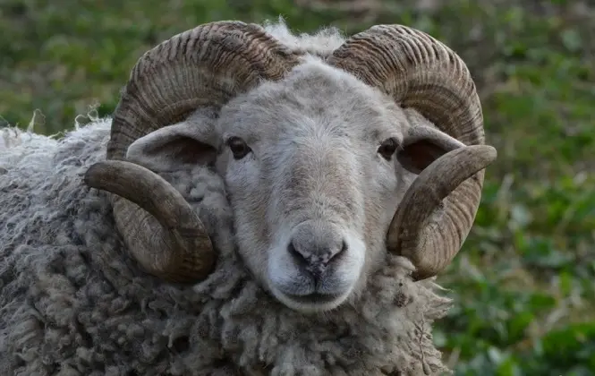
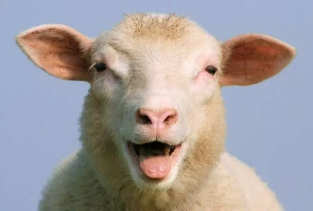
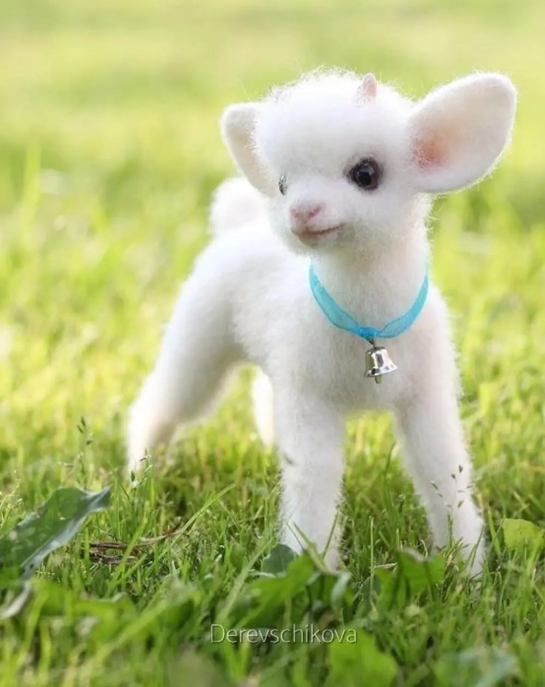

Бара́н арі́йський, або бара́н сві́йський, або вівця́ сві́йська (Ovis aries) — вид ссавців з підродини козли, свійська жуйна парнокопитна тварина роду баранів. Походить від диких гірських баранів — муфлонів (Ovis ammon musimon) і архарів (Ovis ammon s.str.), що були приручені більш як 8 тисяч років тому.
Вікіпедія Баран
Великий рогатий пухнастик, батько Ягнятка
Овечка
Велика вовняна хмарка, мама Ягнятка
Ягнятко
Маленьке м'якеньке хмаренятко